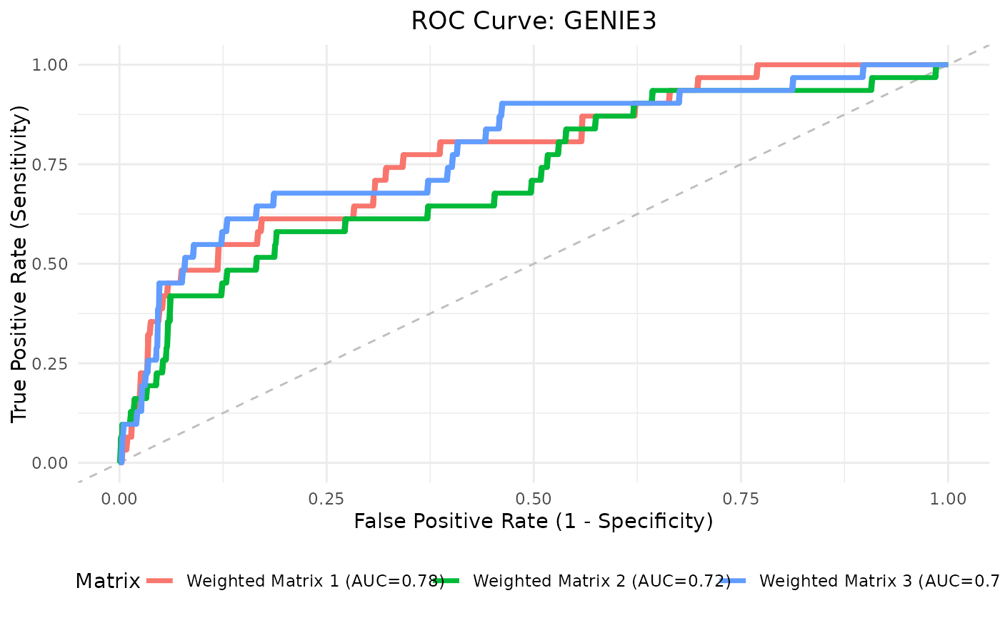

Computes and visualizes Receiver Operating Characteristic (ROC) curves for a list of predicted adjacency matrices compared against a binary ground truth network.
Arguments
- matrices_list
A list of square matrices representing predicted interactions. Each must share dimnames with
ground_truth; entries may be binary (0/1) or continuous weights.- ground_truth
A square binary matrix indicating true interactions (1) in the upper triangle. Must match dims and names of each element of
matrices_list.- plot_title
Character string. Title for the ROC plot.
- is_binary
Logical. If
TRUE, treat matrices as binary predictions. DefaultFALSEfor weighted predictions.
Details
For binary matrices, a single TPR/FPR point is computed per matrix. For weighted ones, a full ROC curve is computed from continuous scores. Diagonals are ignored; symmetry is not enforced.
Examples
data(count_matrices)
data(adj_truth)
networks <- infer_networks(
count_matrices_list = count_matrices,
method = "GENIE3",
nCores = 15
)
head(networks[[1]])
#> regulatoryGene targetGene weight
#> 1 HLA-B TMSB4X 0.2588973
#> 2 NACA BTF3 0.2467506
#> 3 HLA-C PFN1 0.2395998
#> 4 BTF3 NACA 0.2023054
#> 5 HLA-B HLA-E 0.1973815
#> 6 ACTG1 HLA-B 0.1964949
wadj_list <- generate_adjacency(networks)
swadj_list <- symmetrize(wadj_list, weight_function = "mean")
roc_res <- plotROC(
swadj_list,
adj_truth,
plot_title = "ROC Curve: JRF Joint Integration",
is_binary = FALSE
)
roc_res$plot

auc_joint <- roc_res$auc